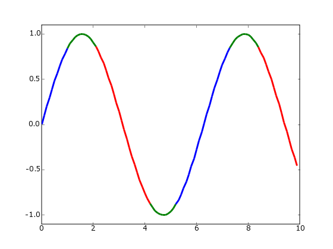
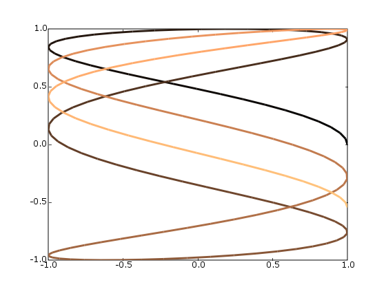

Defining colors manually¶
color of each segment of a line depend on some property of the data being plotted.
An up to date version of the script can be found here.
Here is the script:
#!/usr/bin/env python
'''
Color parts of a line based on its properties, e.g., slope.
'''
import numpy as np
import matplotlib.pyplot as plt
from matplotlib.collections import LineCollection
from matplotlib.colors import ListedColormap, BoundaryNorm
x = np.linspace(0, 3 * np.pi, 500)
y = np.sin(x)
z = np.cos(0.5 * (x[:-1] + x[1:])) # first derivative
# Create a colormap for red, green and blue and a norm to color
# f' < -0.5 red, f' > 0.5 blue, and the rest green
cmap = ListedColormap(['r', 'g', 'b'])
norm = BoundaryNorm([-1, -0.5, 0.5, 1], cmap.N)
# Create a set of line segments so that we can color them individually
# This creates the points as a N x 1 x 2 array so that we can stack points
# together easily to get the segments. The segments array for line collection
# needs to be numlines x points per line x 2 (x and y)
points = np.array([x, y]).T.reshape(-1, 1, 2)
segments = np.concatenate([points[:-1], points[1:]], axis=1)
# Create the line collection object, setting the colormapping parameters.
# Have to set the actual values used for colormapping separately.
lc = LineCollection(segments, cmap=cmap, norm=norm)
lc.set_array(z)
lc.set_linewidth(3)
plt.gca().add_collection(lc)
plt.xlim(x.min(), x.max())
plt.ylim(-1.1, 1.1)
plt.show()
Note that the number of segments is one less than the number of points.
An alternative strategy would be to generate one segment for each contiguous region of a given color.
Using a smooth, builtin colormap¶
If you have a parametric curve to display, and want to represent the parameter using color.
import numpy as np
import matplotlib.pyplot as plt
from matplotlib.collections import LineCollection
t = np.linspace(0, 10, 200)
x = np.cos(np.pi * t)
y = np.sin(t)
# Create a set of line segments so that we can color them individually
# This creates the points as a N x 1 x 2 array so that we can stack points
# together easily to get the segments. The segments array for line collection
# needs to be numlines x points per line x 2 (x and y)
points = np.array([x, y]).T.reshape(-1, 1, 2)
segments = np.concatenate([points[:-1], points[1:]], axis=1)
# Create the line collection object, setting the colormapping parameters.
# Have to set the actual values used for colormapping separately.
lc = LineCollection(segments, cmap=plt.get_cmap('copper'),
norm=plt.Normalize(0, 10))
lc.set_array(t)
lc.set_linewidth(3)
plt.gca().add_collection(lc)
plt.xlim(-1, 1)
plt.ylim(-1, 1)
plt.show()
CategoryCookbookMatplotlib